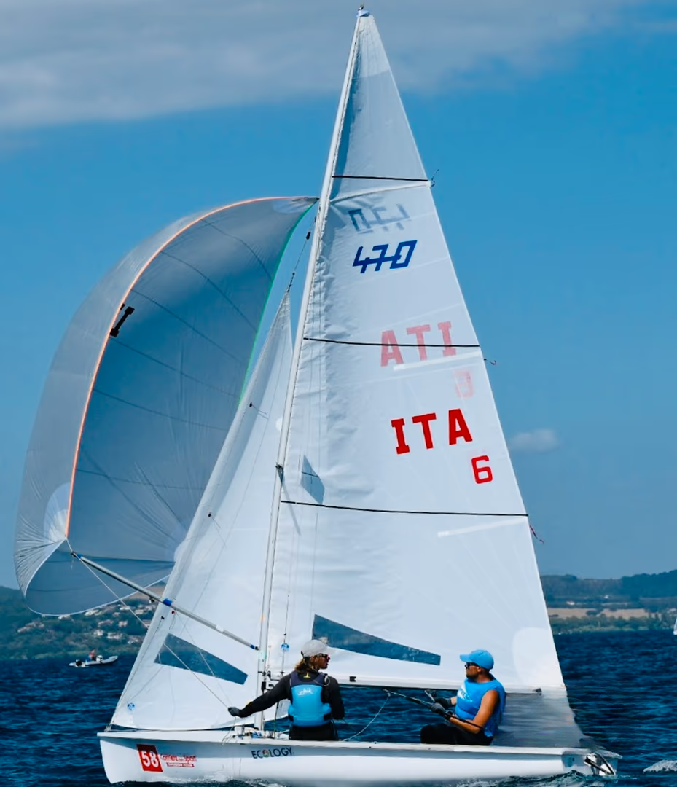

470

Descrizione
Il 470 è una deriva per equipaggio doppio (timoniere e prodiere), nonché una storica e prestigiosa classe olimpica. È una barca altamente tecnica, dotata di randa, fiocco, spinnaker e trapezio per il prodiere. Il successo su un 470 dipende dall'incredibile affiatamento e dalla comunicazione tra i due membri dell'equipaggio.
A chi è adatta?
È la barca ideale per i velisti che vogliono navigare in coppia e amano le manovre complesse e le regate tattiche. Rappresenta il passo successivo per chi proviene dalle derive singole e vuole sperimentare la navigazione in doppio ad alto livello.
| Scheda Tecnica | |
|---|---|
| Lunghezza fuori tutto | 4,70 m |
| Larghezza | 1,68 m |
| Superficie Velica (randa+fiocco) | 12,7 m² |
| Superficie Spinnaker | 13 m² |
| Peso Scafo | 120 kg |
| Equipaggio | 2 persone |